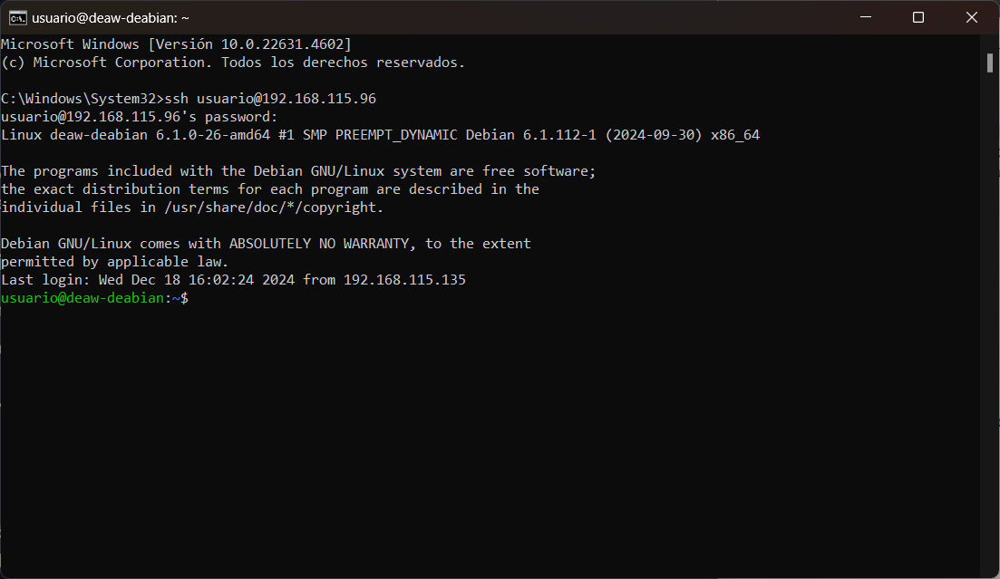
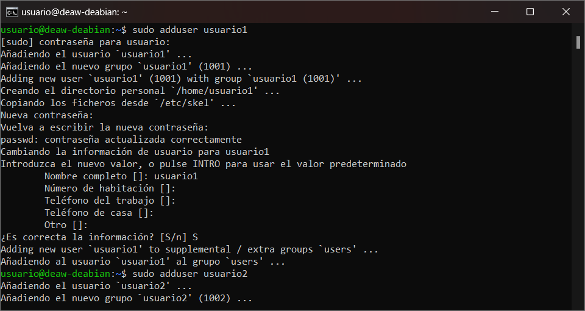
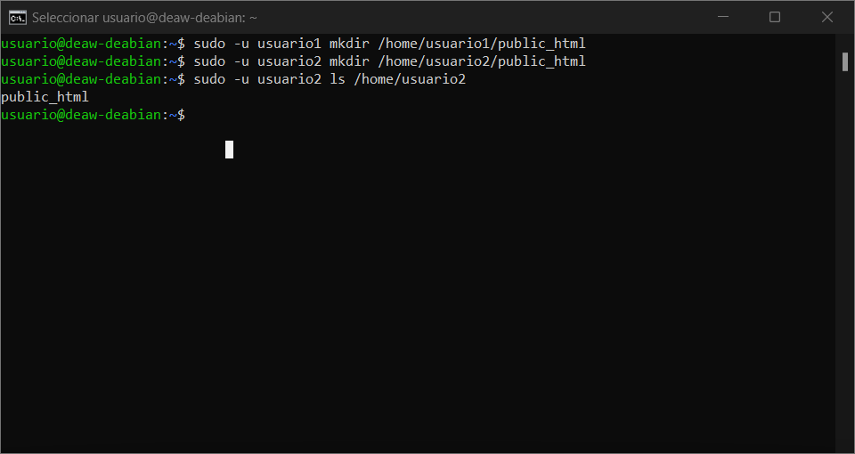
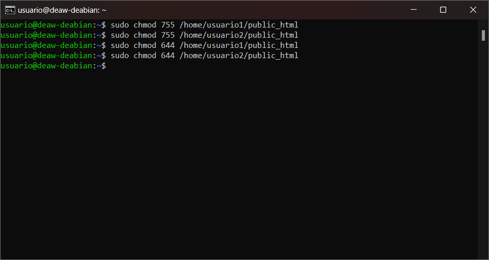
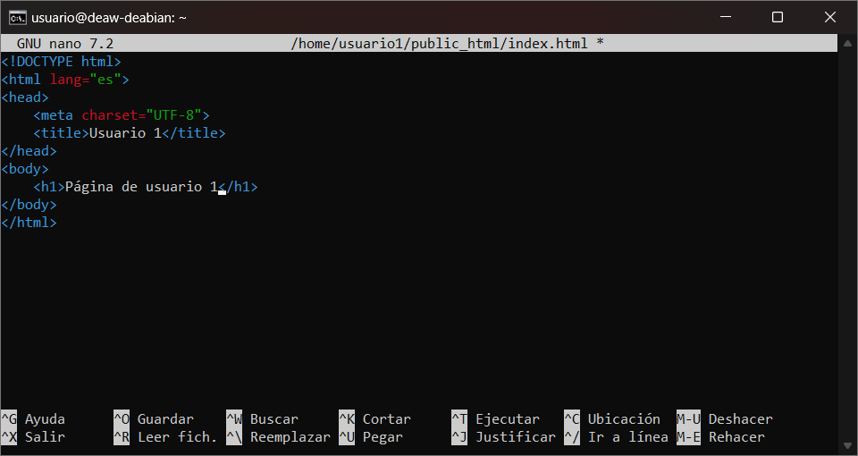
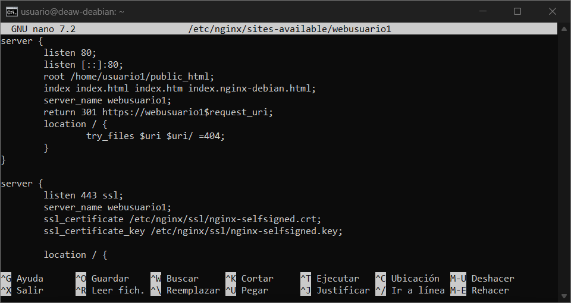
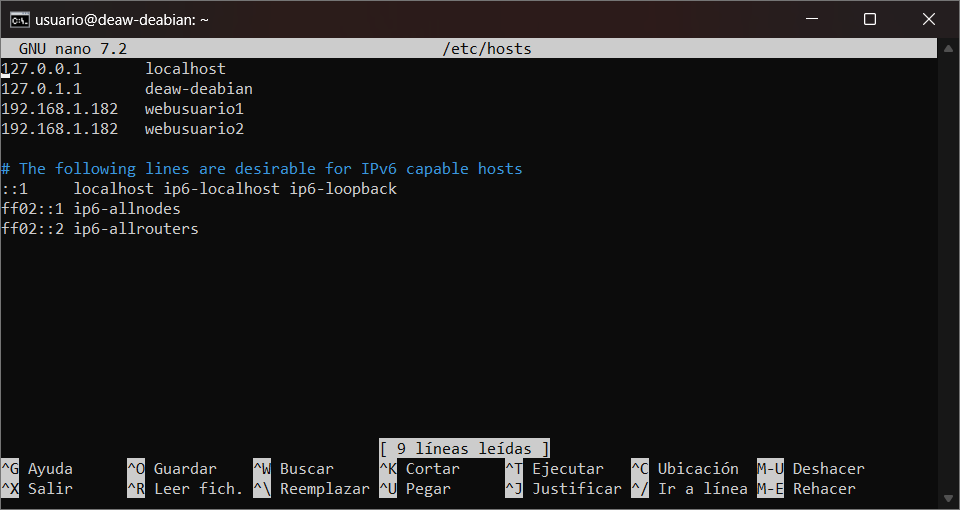
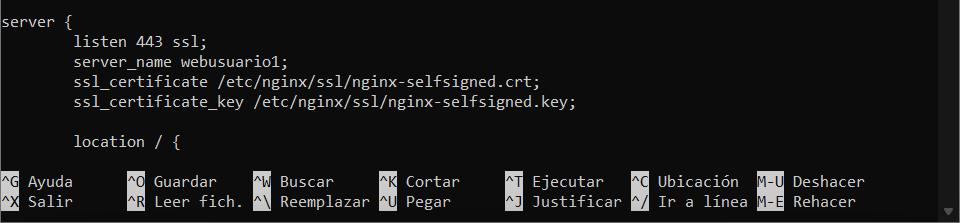
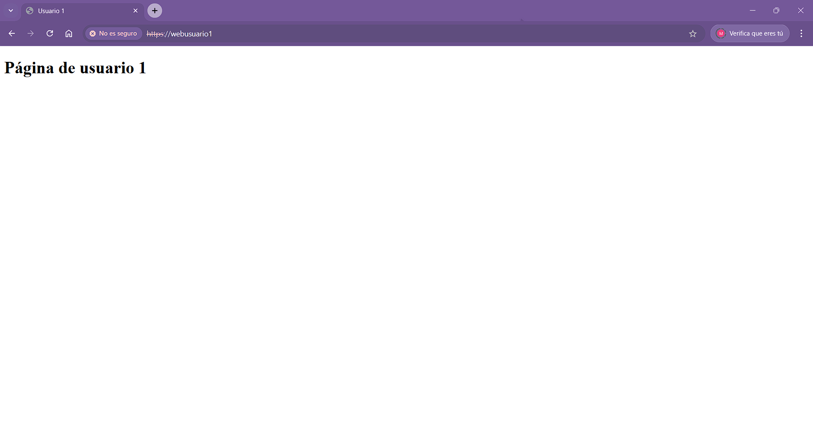
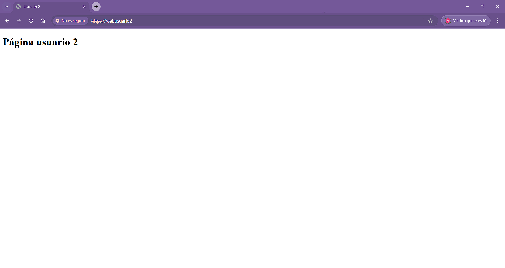

PRÁCTICA DE AMPLIACIÓN UD2
Configuración de un Servidor Nginx con Hosts Virtuales y Directorios de Usuario
El objetivo de esta práctica es configurar un servidor Nginx que utilice hosts virtuales para alojar múltiples sitios web en un solo servidor, cada uno apuntando al directorio public_html de distintos usuarios del sistema operativo Debian.
Instalación de Nginx
-
Instalamos Nginx en el sistema:
En mi caso estoy haciendo uso de una máquina virtual en la que ya tenia instalado el servidor nginx.
-
Usamos SSH para interactuar con el servidor:
sh ssh usuario@servidor_ip
Creación de Usuarios del Sistema
- Creamos al menos dos usuarios nuevos en el sistema:
sh sudo adduser usuario1 sudo adduser usuario2 - Asignamos contraseñas seguras a cada usuario durante el proceso de creación.
Estructura de Carpetas y Archivos
- Directorios personales:
sh sudo -u usuario1 mkdir /home/usuario1/public_html sudo -u usuario2 mkdir /home/usuario2/public_html - Permisos:
sh sudo chmod 755 /home/usuario1/public_html sudo chmod 755 /home/usuario2/public_html - Contenido web:
- Cada usuario debe crear una página web sencilla dentro de su carpeta
public_html. Ejemplo parausuario1:html <!DOCTYPE html> <html lang="es"> <head> <meta charset="UTF-8"> <title>Usuario 1</title> </head> <body> <h1>Página de Usuario 1</h1> </body> </html>
- Cada usuario debe crear una página web sencilla dentro de su carpeta
Creación de Hosts Virtuales
-
Creamos los archivos de configuración para cada web. Ejemplo para
usuario1:sh sudo nano /etc/nginx/sites-available/usuario1Contenido del archivo: 2. Asignamos los dominios ficticios a cada host virtual. 3. Configuramos cada host virtual siguiendo el ejemplo anterior. 4. Habilitamos los enlaces simbólicos:
sh sudo ln -s /etc/nginx/sites-available/usuario1 /etc/nginx/sites-enabled/ sudo ln -s /etc/nginx/sites-available/usuario2 /etc/nginx/sites-enabled/
Configuración del Archivo Host
-
Configuramos el archivo host en el SO huésped para poder acceder a las distintas webs:
sh sudo nano /etc/hostsAñadimos las siguientes líneas:
Implementar HTTPS
-
Generamos un certificado SSL autofirmado para propósitos de prueba:
sh sudo openssl req -x509 -nodes -days 365 -newkey rsa:2048 -keyout /etc/nginx/ssl/nginx-selfsigned.key -out /etc/nginx/ssl/nginx-selfsigned.crt -
Configuramos Nginx para usar HTTPS. Ejemplo para
usuario1: 3. Reiniciamos Nginx para aplicar los cambios:
sh sudo systemctl restart nginx -
Abrimos la url en el navegador
Para Usuario 1:

Para Usuario 2:
